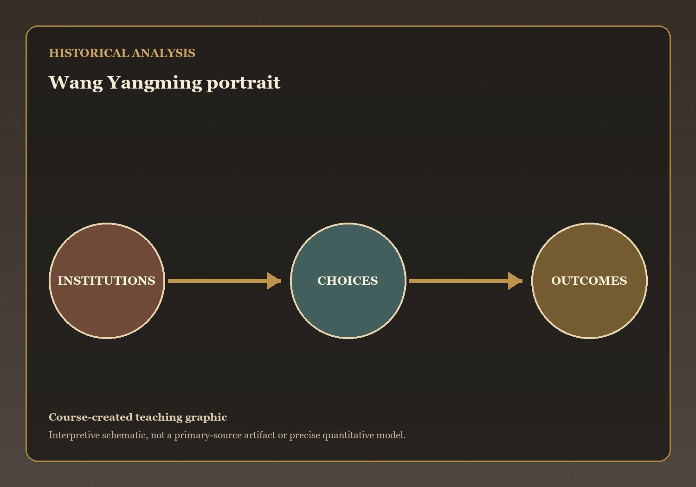
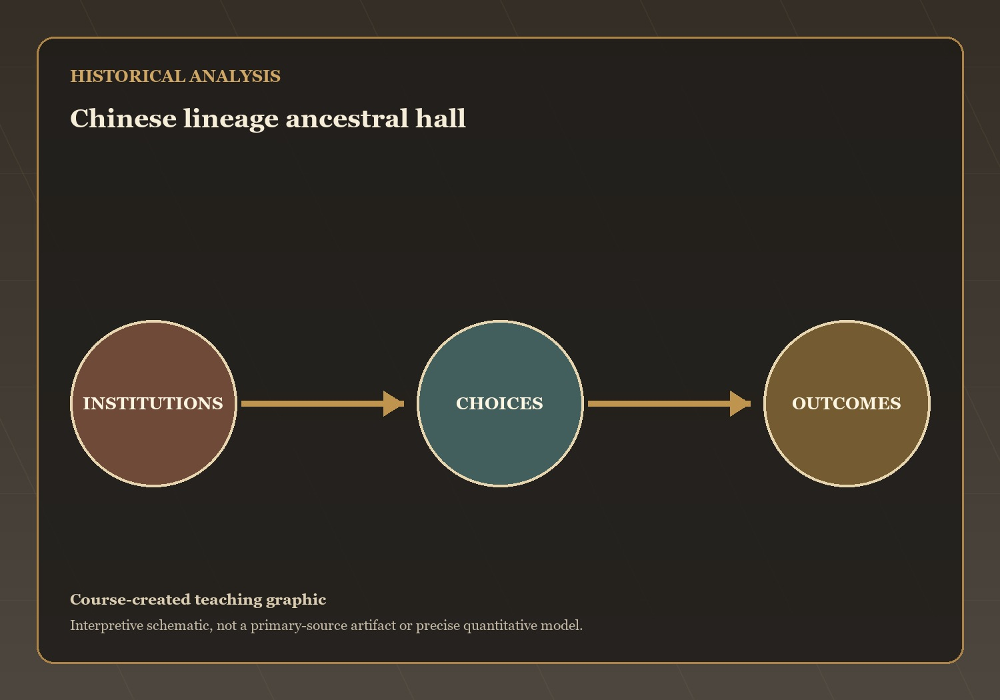
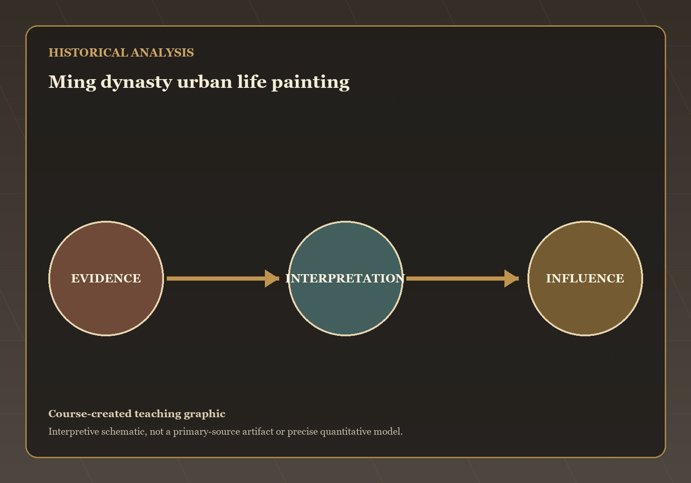
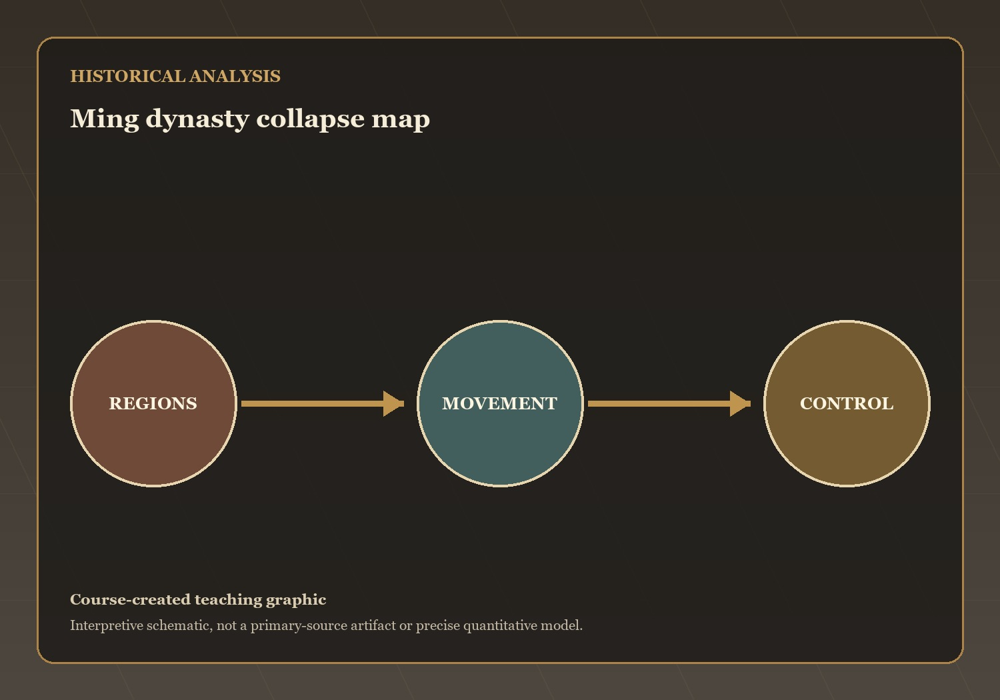

Questions and Problems
Mechanisms and Consequences
This lecture has treated how philosophical dissent, lineage organization, commercial culture, and cascading crisis reshaped the late Ming as a connected historical…
Q8 — evidence, mechanism, and consequence

Visual evidence for Q8
Wang Yangming rejected the idea that moral truth was discovered primarily through the study of external texts and things. Instead, he argued that universal…
What mechanism best explains this outcome? State your answer to Q8 as a causal claim.
Q9 — evidence, mechanism, and consequence

Visual evidence for Q9
Population growth, commercialization, and expanding regional economies encouraged new forms of local organization. Lineages became increasingly important as corporate groups that owned property, sponsored…
What mechanism best explains this outcome? State your answer to Q9 as a causal claim.
Q10 — evidence, mechanism, and consequence

Visual evidence for Q10
Urban prosperity, commercial printing, and expanding literacy created a large audience for entertainment and literature. Writers increasingly produced works in the vernacular language rather…
What mechanism best explains this outcome? State your answer to Q10 as a causal claim.
Q11 — evidence, mechanism, and consequence

Visual evidence for Q11
The Ming collapse resulted from several interconnected crises. Military expenses increased dramatically because of conflicts such as the Japanese invasion of Korea
What mechanism best explains this outcome? State your answer to Q11 as a causal claim.
The open question: which development in this lecture most changed the range of choices available to ordinary people, and is that change visible in…
Banner Conquest and Ming Loyalism — the next stage of the course narrative.
→ / Space: Next | ←: Previous | S: Notes | F: Fullscreen | O: Overview | ESC: Close popup